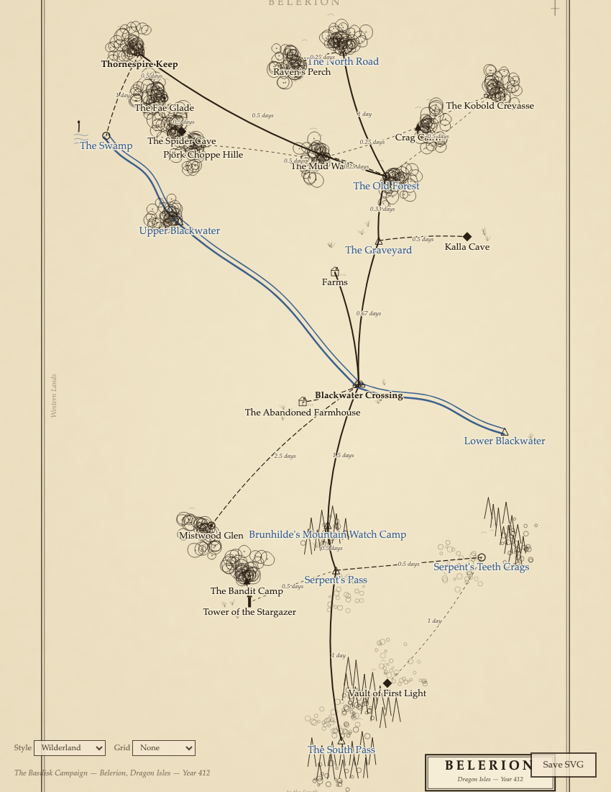
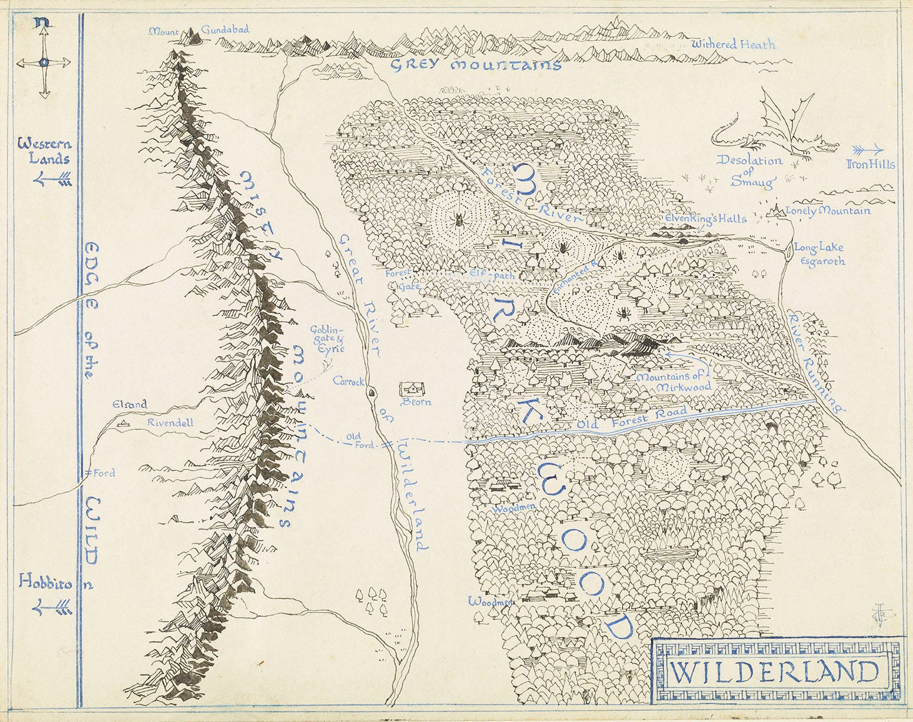
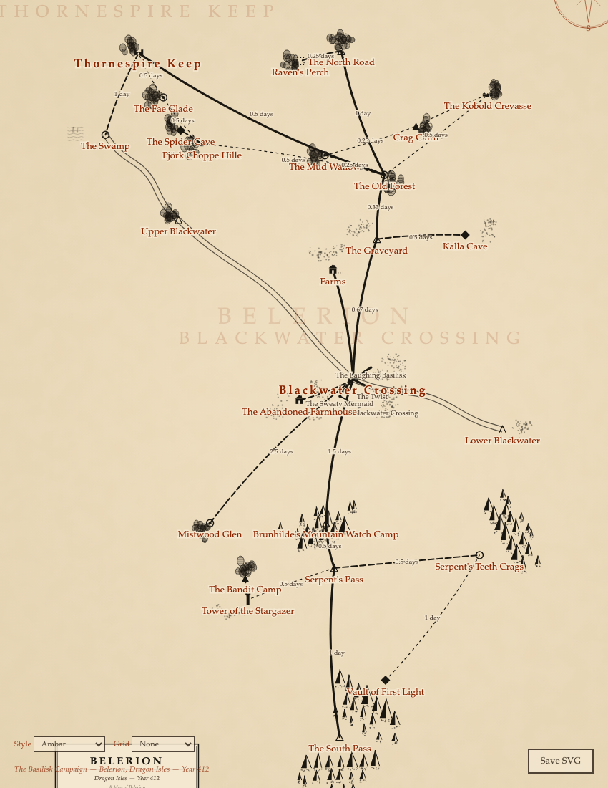
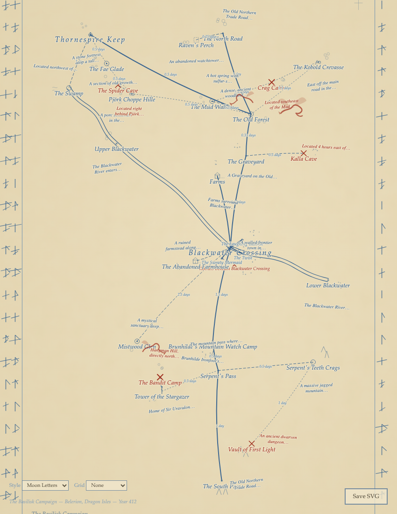
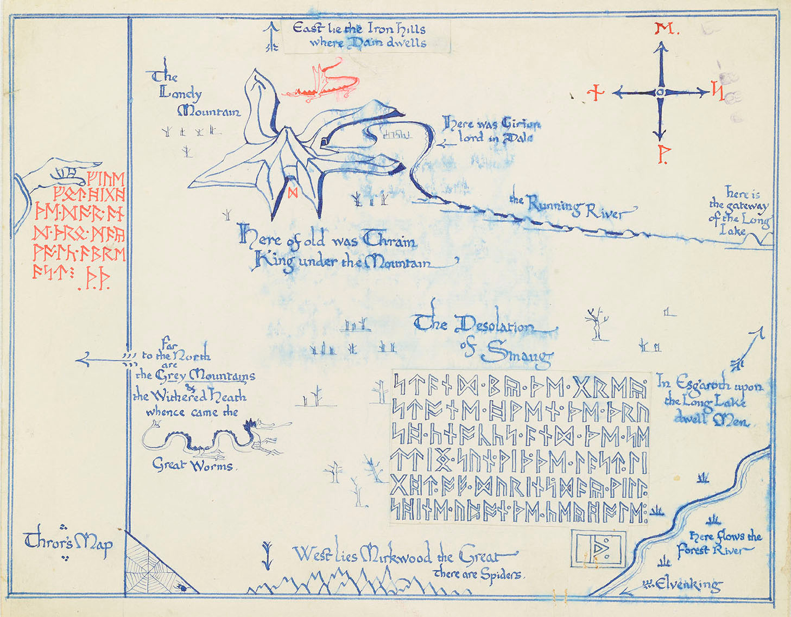

Map Styles


Reference: Tolkien's Wilderland map, The Hobbit
Wilderland
Tolkien-inspired hand-drawn aesthetic with round tree canopies, peaked mountains with shadow sides, blue rivers, and an ornate decorative border. Labels in warm brown and blue for geographic features. The default style.


Reference: Pauline Baynes' Map of Middle-earth
Ambar
Dense engraving-style map with forest hatching, ridge-line mountains with scree, large region labels, and an ornate compass rose. Dark parchment background with warm tones. Named for the Quenya word for "world."


Reference: Thror's Map, The Hobbit
Moon Letters
Sparse blue-ink sketch on aged parchment with red danger markers, a runic border, handwritten annotations describing locations, and sea-creature decorations. Evokes a treasure map drawn by firelight.